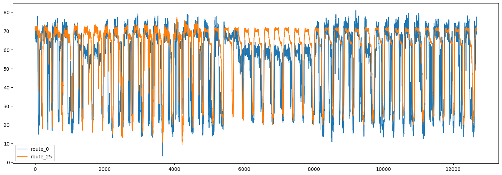
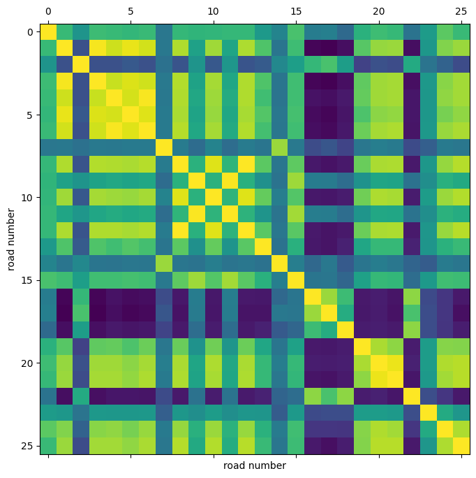
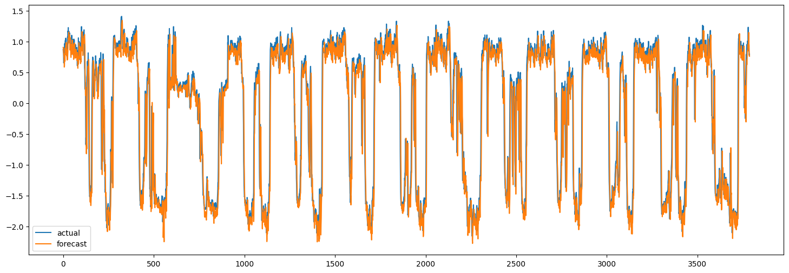

Traffic forecasting using graph neural networks and LSTM
Author: Arash Khodadadi
Date created: 2021/12/28
Last modified: 2023/11/22
Description: This example demonstrates how to do timeseries forecasting over graphs.

Introduction
This example shows how to forecast traffic condition using graph neural networks and LSTM. Specifically, we are interested in predicting the future values of the traffic speed given a history of the traffic speed for a collection of road segments.
One popular method to solve this problem is to consider each road segment's traffic speed as a separate timeseries and predict the future values of each timeseries using the past values of the same timeseries.
This method, however, ignores the dependency of the traffic speed of one road segment on the neighboring segments. To be able to take into account the complex interactions between the traffic speed on a collection of neighboring roads, we can define the traffic network as a graph and consider the traffic speed as a signal on this graph. In this example, we implement a neural network architecture which can process timeseries data over a graph. We first show how to process the data and create a tf.data.Dataset for forecasting over graphs. Then, we implement a model which uses graph convolution and LSTM layers to perform forecasting over a graph.
The data processing and the model architecture are inspired by this paper:
Yu, Bing, Haoteng Yin, and Zhanxing Zhu. "Spatio-temporal graph convolutional networks: a deep learning framework for traffic forecasting." Proceedings of the 27th International Joint Conference on Artificial Intelligence, 2018. (github)
Setup
import os
os.environ["KERAS_BACKEND"] = "tensorflow"
import pandas as pd
import numpy as np
import typing
import matplotlib.pyplot as plt
import tensorflow as tf
import keras
from keras import layers
from keras import ops
Data preparation
Data description
We use a real-world traffic speed dataset named PeMSD7. We use the version
collected and prepared by Yu et al., 2018
and available
here.
The data consists of two files:
PeMSD7_W_228.csvcontains the distances between 228 stations across the District 7 of California.PeMSD7_V_228.csvcontains traffic speed collected for those stations in the weekdays of May and June of 2012.
The full description of the dataset can be found in Yu et al., 2018.
Loading data
url = "https://github.com/VeritasYin/STGCN_IJCAI-18/raw/master/dataset/PeMSD7_Full.zip"
data_dir = keras.utils.get_file(origin=url, extract=True, archive_format="zip")
data_dir = data_dir.rstrip("PeMSD7_Full.zip")
route_distances = pd.read_csv(
os.path.join(data_dir, "PeMSD7_W_228.csv"), header=None
).to_numpy()
speeds_array = pd.read_csv(
os.path.join(data_dir, "PeMSD7_V_228.csv"), header=None
).to_numpy()
print(f"route_distances shape={route_distances.shape}")
print(f"speeds_array shape={speeds_array.shape}")
route_distances shape=(228, 228)
speeds_array shape=(12672, 228)
sub-sampling roads
To reduce the problem size and make the training faster, we will only
work with a sample of 26 roads out of the 228 roads in the dataset.
We have chosen the roads by starting from road 0, choosing the 5 closest
roads to it, and continuing this process until we get 25 roads. You can choose
any other subset of the roads. We chose the roads in this way to increase the likelihood
of having roads with correlated speed timeseries.
sample_routes contains the IDs of the selected roads.
sample_routes = [
0,
1,
4,
7,
8,
11,
15,
108,
109,
114,
115,
118,
120,
123,
124,
126,
127,
129,
130,
132,
133,
136,
139,
144,
147,
216,
]
route_distances = route_distances[np.ix_(sample_routes, sample_routes)]
speeds_array = speeds_array[:, sample_routes]
print(f"route_distances shape={route_distances.shape}")
print(f"speeds_array shape={speeds_array.shape}")
route_distances shape=(26, 26)
speeds_array shape=(12672, 26)
Data visualization
Here are the timeseries of the traffic speed for two of the routes:
plt.figure(figsize=(18, 6))
plt.plot(speeds_array[:, [0, -1]])
plt.legend(["route_0", "route_25"])
<matplotlib.legend.Legend at 0x7f5a870b2050>

We can also visualize the correlation between the timeseries in different routes.
plt.figure(figsize=(8, 8))
plt.matshow(np.corrcoef(speeds_array.T), 0)
plt.xlabel("road number")
plt.ylabel("road number")
Text(0, 0.5, 'road number')

Using this correlation heatmap, we can see that for example the speed in routes 4, 5, 6 are highly correlated.
Splitting and normalizing data
Next, we split the speed values array into train/validation/test sets, and normalize the resulting arrays:
train_size, val_size = 0.5, 0.2
def preprocess(data_array: np.ndarray, train_size: float, val_size: float):
"""Splits data into train/val/test sets and normalizes the data.
Args:
data_array: ndarray of shape `(num_time_steps, num_routes)`
train_size: A float value between 0.0 and 1.0 that represent the proportion of the dataset
to include in the train split.
val_size: A float value between 0.0 and 1.0 that represent the proportion of the dataset
to include in the validation split.
Returns:
`train_array`, `val_array`, `test_array`
"""
num_time_steps = data_array.shape[0]
num_train, num_val = (
int(num_time_steps * train_size),
int(num_time_steps * val_size),
)
train_array = data_array[:num_train]
mean, std = train_array.mean(axis=0), train_array.std(axis=0)
train_array = (train_array - mean) / std
val_array = (data_array[num_train : (num_train + num_val)] - mean) / std
test_array = (data_array[(num_train + num_val) :] - mean) / std
return train_array, val_array, test_array
train_array, val_array, test_array = preprocess(speeds_array, train_size, val_size)
print(f"train set size: {train_array.shape}")
print(f"validation set size: {val_array.shape}")
print(f"test set size: {test_array.shape}")
train set size: (6336, 26)
validation set size: (2534, 26)
test set size: (3802, 26)
Creating TensorFlow Datasets
Next, we create the datasets for our forecasting problem. The forecasting problem
can be stated as follows: given a sequence of the
road speed values at times t+1, t+2, ..., t+T, we want to predict the future values of
the roads speed for times t+T+1, ..., t+T+h. So for each time t the inputs to our
model are T vectors each of size N and the targets are h vectors each of size N,
where N is the number of roads.
We use the Keras built-in function
keras.utils.timeseries_dataset_from_array.
The function create_tf_dataset() below takes as input a numpy.ndarray and returns a
tf.data.Dataset. In this function input_sequence_length=T and forecast_horizon=h.
The argument multi_horizon needs more explanation. Assume forecast_horizon=3.
If multi_horizon=True then the model will make a forecast for time steps
t+T+1, t+T+2, t+T+3. So the target will have shape (T,3). But if
multi_horizon=False, the model will make a forecast only for time step t+T+3 and
so the target will have shape (T, 1).
You may notice that the input tensor in each batch has shape
(batch_size, input_sequence_length, num_routes, 1). The last dimension is added to
make the model more general: at each time step, the input features for each raod may
contain multiple timeseries. For instance, one might want to use temperature timeseries
in addition to historical values of the speed as input features. In this example,
however, the last dimension of the input is always 1.
We use the last 12 values of the speed in each road to forecast the speed for 3 time steps ahead:
batch_size = 64
input_sequence_length = 12
forecast_horizon = 3
multi_horizon = False
def create_tf_dataset(
data_array: np.ndarray,
input_sequence_length: int,
forecast_horizon: int,
batch_size: int = 128,
shuffle=True,
multi_horizon=True,
):
"""Creates tensorflow dataset from numpy array.
This function creates a dataset where each element is a tuple `(inputs, targets)`.
`inputs` is a Tensor
of shape `(batch_size, input_sequence_length, num_routes, 1)` containing
the `input_sequence_length` past values of the timeseries for each node.
`targets` is a Tensor of shape `(batch_size, forecast_horizon, num_routes)`
containing the `forecast_horizon`
future values of the timeseries for each node.
Args:
data_array: np.ndarray with shape `(num_time_steps, num_routes)`
input_sequence_length: Length of the input sequence (in number of timesteps).
forecast_horizon: If `multi_horizon=True`, the target will be the values of the timeseries for 1 to
`forecast_horizon` timesteps ahead. If `multi_horizon=False`, the target will be the value of the
timeseries `forecast_horizon` steps ahead (only one value).
batch_size: Number of timeseries samples in each batch.
shuffle: Whether to shuffle output samples, or instead draw them in chronological order.
multi_horizon: See `forecast_horizon`.
Returns:
A tf.data.Dataset instance.
"""
inputs = keras.utils.timeseries_dataset_from_array(
np.expand_dims(data_array[:-forecast_horizon], axis=-1),
None,
sequence_length=input_sequence_length,
shuffle=False,
batch_size=batch_size,
)
target_offset = (
input_sequence_length
if multi_horizon
else input_sequence_length + forecast_horizon - 1
)
target_seq_length = forecast_horizon if multi_horizon else 1
targets = keras.utils.timeseries_dataset_from_array(
data_array[target_offset:],
None,
sequence_length=target_seq_length,
shuffle=False,
batch_size=batch_size,
)
dataset = tf.data.Dataset.zip((inputs, targets))
if shuffle:
dataset = dataset.shuffle(100)
return dataset.prefetch(16).cache()
train_dataset, val_dataset = (
create_tf_dataset(data_array, input_sequence_length, forecast_horizon, batch_size)
for data_array in [train_array, val_array]
)
test_dataset = create_tf_dataset(
test_array,
input_sequence_length,
forecast_horizon,
batch_size=test_array.shape[0],
shuffle=False,
multi_horizon=multi_horizon,
)
Roads Graph
As mentioned before, we assume that the road segments form a graph.
The PeMSD7 dataset has the road segments distance. The next step
is to create the graph adjacency matrix from these distances. Following
Yu et al., 2018 (equation 10) we assume there
is an edge between two nodes in the graph if the distance between the corresponding roads
is less than a threshold.
def compute_adjacency_matrix(
route_distances: np.ndarray, sigma2: float, epsilon: float
):
"""Computes the adjacency matrix from distances matrix.
It uses the formula in https://github.com/VeritasYin/STGCN_IJCAI-18#data-preprocessing to
compute an adjacency matrix from the distance matrix.
The implementation follows that paper.
Args:
route_distances: np.ndarray of shape `(num_routes, num_routes)`. Entry `i,j` of this array is the
distance between roads `i,j`.
sigma2: Determines the width of the Gaussian kernel applied to the square distances matrix.
epsilon: A threshold specifying if there is an edge between two nodes. Specifically, `A[i,j]=1`
if `np.exp(-w2[i,j] / sigma2) >= epsilon` and `A[i,j]=0` otherwise, where `A` is the adjacency
matrix and `w2=route_distances * route_distances`
Returns:
A boolean graph adjacency matrix.
"""
num_routes = route_distances.shape[0]
route_distances = route_distances / 10000.0
w2, w_mask = (
route_distances * route_distances,
np.ones([num_routes, num_routes]) - np.identity(num_routes),
)
return (np.exp(-w2 / sigma2) >= epsilon) * w_mask
The function compute_adjacency_matrix() returns a boolean adjacency matrix
where 1 means there is an edge between two nodes. We use the following class
to store the information about the graph.
class GraphInfo:
def __init__(self, edges: typing.Tuple[list, list], num_nodes: int):
self.edges = edges
self.num_nodes = num_nodes
sigma2 = 0.1
epsilon = 0.5
adjacency_matrix = compute_adjacency_matrix(route_distances, sigma2, epsilon)
node_indices, neighbor_indices = np.where(adjacency_matrix == 1)
graph = GraphInfo(
edges=(node_indices.tolist(), neighbor_indices.tolist()),
num_nodes=adjacency_matrix.shape[0],
)
print(f"number of nodes: {graph.num_nodes}, number of edges: {len(graph.edges[0])}")
number of nodes: 26, number of edges: 150
Network architecture
Our model for forecasting over the graph consists of a graph convolution layer and a LSTM layer.
Graph convolution layer
Our implementation of the graph convolution layer resembles the implementation
in this Keras example. Note that
in that example input to the layer is a 2D tensor of shape (num_nodes,in_feat)
but in our example the input to the layer is a 4D tensor of shape
(num_nodes, batch_size, input_seq_length, in_feat). The graph convolution layer
performs the following steps:
- The nodes' representations are computed in
self.compute_nodes_representation()by multiplying the input features byself.weight - The aggregated neighbors' messages are computed in
self.compute_aggregated_messages()by first aggregating the neighbors' representations and then multiplying the results byself.weight - The final output of the layer is computed in
self.update()by combining the nodes representations and the neighbors' aggregated messages
class GraphConv(layers.Layer):
def __init__(
self,
in_feat,
out_feat,
graph_info: GraphInfo,
aggregation_type="mean",
combination_type="concat",
activation: typing.Optional[str] = None,
**kwargs,
):
super().__init__(**kwargs)
self.in_feat = in_feat
self.out_feat = out_feat
self.graph_info = graph_info
self.aggregation_type = aggregation_type
self.combination_type = combination_type
self.weight = self.add_weight(
initializer=keras.initializers.GlorotUniform(),
shape=(in_feat, out_feat),
dtype="float32",
trainable=True,
)
self.activation = layers.Activation(activation)
def aggregate(self, neighbour_representations):
aggregation_func = {
"sum": tf.math.unsorted_segment_sum,
"mean": tf.math.unsorted_segment_mean,
"max": tf.math.unsorted_segment_max,
}.get(self.aggregation_type)
if aggregation_func:
return aggregation_func(
neighbour_representations,
self.graph_info.edges[0],
num_segments=self.graph_info.num_nodes,
)
raise ValueError(f"Invalid aggregation type: {self.aggregation_type}")
def compute_nodes_representation(self, features):
"""Computes each node's representation.
The nodes' representations are obtained by multiplying the features tensor with
`self.weight`. Note that
`self.weight` has shape `(in_feat, out_feat)`.
Args:
features: Tensor of shape `(num_nodes, batch_size, input_seq_len, in_feat)`
Returns:
A tensor of shape `(num_nodes, batch_size, input_seq_len, out_feat)`
"""
return ops.matmul(features, self.weight)
def compute_aggregated_messages(self, features):
neighbour_representations = tf.gather(features, self.graph_info.edges[1])
aggregated_messages = self.aggregate(neighbour_representations)
return ops.matmul(aggregated_messages, self.weight)
def update(self, nodes_representation, aggregated_messages):
if self.combination_type == "concat":
h = ops.concatenate([nodes_representation, aggregated_messages], axis=-1)
elif self.combination_type == "add":
h = nodes_representation + aggregated_messages
else:
raise ValueError(f"Invalid combination type: {self.combination_type}.")
return self.activation(h)
def call(self, features):
"""Forward pass.
Args:
features: tensor of shape `(num_nodes, batch_size, input_seq_len, in_feat)`
Returns:
A tensor of shape `(num_nodes, batch_size, input_seq_len, out_feat)`
"""
nodes_representation = self.compute_nodes_representation(features)
aggregated_messages = self.compute_aggregated_messages(features)
return self.update(nodes_representation, aggregated_messages)
LSTM plus graph convolution
By applying the graph convolution layer to the input tensor, we get another tensor containing the nodes' representations over time (another 4D tensor). For each time step, a node's representation is informed by the information from its neighbors.
To make good forecasts, however, we need not only information from the neighbors
but also we need to process the information over time. To this end, we can pass each
node's tensor through a recurrent layer. The LSTMGC layer below, first applies
a graph convolution layer to the inputs and then passes the results through a
LSTM layer.
class LSTMGC(layers.Layer):
"""Layer comprising a convolution layer followed by LSTM and dense layers."""
def __init__(
self,
in_feat,
out_feat,
lstm_units: int,
input_seq_len: int,
output_seq_len: int,
graph_info: GraphInfo,
graph_conv_params: typing.Optional[dict] = None,
**kwargs,
):
super().__init__(**kwargs)
# graph conv layer
if graph_conv_params is None:
graph_conv_params = {
"aggregation_type": "mean",
"combination_type": "concat",
"activation": None,
}
self.graph_conv = GraphConv(in_feat, out_feat, graph_info, **graph_conv_params)
self.lstm = layers.LSTM(lstm_units, activation="relu")
self.dense = layers.Dense(output_seq_len)
self.input_seq_len, self.output_seq_len = input_seq_len, output_seq_len
def call(self, inputs):
"""Forward pass.
Args:
inputs: tensor of shape `(batch_size, input_seq_len, num_nodes, in_feat)`
Returns:
A tensor of shape `(batch_size, output_seq_len, num_nodes)`.
"""
# convert shape to (num_nodes, batch_size, input_seq_len, in_feat)
inputs = ops.transpose(inputs, [2, 0, 1, 3])
gcn_out = self.graph_conv(
inputs
) # gcn_out has shape: (num_nodes, batch_size, input_seq_len, out_feat)
shape = ops.shape(gcn_out)
num_nodes, batch_size, input_seq_len, out_feat = (
shape[0],
shape[1],
shape[2],
shape[3],
)
# LSTM takes only 3D tensors as input
gcn_out = ops.reshape(
gcn_out, (batch_size * num_nodes, input_seq_len, out_feat)
)
lstm_out = self.lstm(
gcn_out
) # lstm_out has shape: (batch_size * num_nodes, lstm_units)
dense_output = self.dense(
lstm_out
) # dense_output has shape: (batch_size * num_nodes, output_seq_len)
output = ops.reshape(dense_output, (num_nodes, batch_size, self.output_seq_len))
return ops.transpose(
output, [1, 2, 0]
) # returns Tensor of shape (batch_size, output_seq_len, num_nodes)
Model training
in_feat = 1
batch_size = 64
epochs = 20
input_sequence_length = 12
forecast_horizon = 3
multi_horizon = False
out_feat = 10
lstm_units = 64
graph_conv_params = {
"aggregation_type": "mean",
"combination_type": "concat",
"activation": None,
}
st_gcn = LSTMGC(
in_feat,
out_feat,
lstm_units,
input_sequence_length,
forecast_horizon,
graph,
graph_conv_params,
)
inputs = layers.Input((input_sequence_length, graph.num_nodes, in_feat))
outputs = st_gcn(inputs)
model = keras.models.Model(inputs, outputs)
model.compile(
optimizer=keras.optimizers.RMSprop(learning_rate=0.0002),
loss=keras.losses.MeanSquaredError(),
)
model.fit(
train_dataset,
validation_data=val_dataset,
epochs=epochs,
callbacks=[keras.callbacks.EarlyStopping(patience=10)],
)
Epoch 1/20
1/99 [37m━━━━━━━━━━━━━━━━━━━━ 5:16 3s/step - loss: 1.0735
WARNING: All log messages before absl::InitializeLog() is called are written to STDERR
I0000 00:00:1700705896.341813 3354152 device_compiler.h:186] Compiled cluster using XLA! This line is logged at most once for the lifetime of the process.
W0000 00:00:1700705896.362213 3354152 graph_launch.cc:671] Fallback to op-by-op mode because memset node breaks graph update
W0000 00:00:1700705896.363019 3354152 graph_launch.cc:671] Fallback to op-by-op mode because memset node breaks graph update
44/99 ━━━━━━━━[37m━━━━━━━━━━━━ 1s 32ms/step - loss: 0.7919
W0000 00:00:1700705897.577991 3354154 graph_launch.cc:671] Fallback to op-by-op mode because memset node breaks graph update
W0000 00:00:1700705897.578802 3354154 graph_launch.cc:671] Fallback to op-by-op mode because memset node breaks graph update
99/99 ━━━━━━━━━━━━━━━━━━━━ 7s 36ms/step - loss: 0.7470 - val_loss: 0.3568
Epoch 2/20
99/99 ━━━━━━━━━━━━━━━━━━━━ 0s 5ms/step - loss: 0.2785 - val_loss: 0.1845
Epoch 3/20
99/99 ━━━━━━━━━━━━━━━━━━━━ 0s 5ms/step - loss: 0.1734 - val_loss: 0.1250
Epoch 4/20
99/99 ━━━━━━━━━━━━━━━━━━━━ 0s 5ms/step - loss: 0.1313 - val_loss: 0.1084
Epoch 5/20
99/99 ━━━━━━━━━━━━━━━━━━━━ 0s 5ms/step - loss: 0.1095 - val_loss: 0.0994
Epoch 6/20
99/99 ━━━━━━━━━━━━━━━━━━━━ 0s 5ms/step - loss: 0.0960 - val_loss: 0.0930
Epoch 7/20
99/99 ━━━━━━━━━━━━━━━━━━━━ 0s 5ms/step - loss: 0.0896 - val_loss: 0.0954
Epoch 8/20
99/99 ━━━━━━━━━━━━━━━━━━━━ 0s 5ms/step - loss: 0.0862 - val_loss: 0.0920
Epoch 9/20
99/99 ━━━━━━━━━━━━━━━━━━━━ 1s 5ms/step - loss: 0.0841 - val_loss: 0.0898
Epoch 10/20
99/99 ━━━━━━━━━━━━━━━━━━━━ 1s 5ms/step - loss: 0.0827 - val_loss: 0.0884
Epoch 11/20
99/99 ━━━━━━━━━━━━━━━━━━━━ 1s 5ms/step - loss: 0.0817 - val_loss: 0.0865
Epoch 12/20
99/99 ━━━━━━━━━━━━━━━━━━━━ 0s 5ms/step - loss: 0.0809 - val_loss: 0.0843
Epoch 13/20
99/99 ━━━━━━━━━━━━━━━━━━━━ 0s 5ms/step - loss: 0.0803 - val_loss: 0.0828
Epoch 14/20
99/99 ━━━━━━━━━━━━━━━━━━━━ 0s 5ms/step - loss: 0.0798 - val_loss: 0.0814
Epoch 15/20
99/99 ━━━━━━━━━━━━━━━━━━━━ 0s 5ms/step - loss: 0.0794 - val_loss: 0.0802
Epoch 16/20
99/99 ━━━━━━━━━━━━━━━━━━━━ 0s 5ms/step - loss: 0.0790 - val_loss: 0.0794
Epoch 17/20
99/99 ━━━━━━━━━━━━━━━━━━━━ 0s 5ms/step - loss: 0.0787 - val_loss: 0.0786
Epoch 18/20
99/99 ━━━━━━━━━━━━━━━━━━━━ 0s 5ms/step - loss: 0.0785 - val_loss: 0.0780
Epoch 19/20
99/99 ━━━━━━━━━━━━━━━━━━━━ 0s 5ms/step - loss: 0.0782 - val_loss: 0.0776
Epoch 20/20
99/99 ━━━━━━━━━━━━━━━━━━━━ 0s 5ms/step - loss: 0.0780 - val_loss: 0.0776
<keras.src.callbacks.history.History at 0x7f59b8152560>
Making forecasts on test set
Now we can use the trained model to make forecasts for the test set. Below, we compute the MAE of the model and compare it to the MAE of naive forecasts. The naive forecasts are the last value of the speed for each node.
x_test, y = next(test_dataset.as_numpy_iterator())
y_pred = model.predict(x_test)
plt.figure(figsize=(18, 6))
plt.plot(y[:, 0, 0])
plt.plot(y_pred[:, 0, 0])
plt.legend(["actual", "forecast"])
naive_mse, model_mse = (
np.square(x_test[:, -1, :, 0] - y[:, 0, :]).mean(),
np.square(y_pred[:, 0, :] - y[:, 0, :]).mean(),
)
print(f"naive MAE: {naive_mse}, model MAE: {model_mse}")
119/119 ━━━━━━━━━━━━━━━━━━━━ 1s 6ms/step
naive MAE: 0.13472308593195767, model MAE: 0.13524348477186485

Of course, the goal here is to demonstrate the method,
not to achieve the best performance. To improve the
model's accuracy, all model hyperparameters should be tuned carefully. In addition,
several of the LSTMGC blocks can be stacked to increase the representation power
of the model.